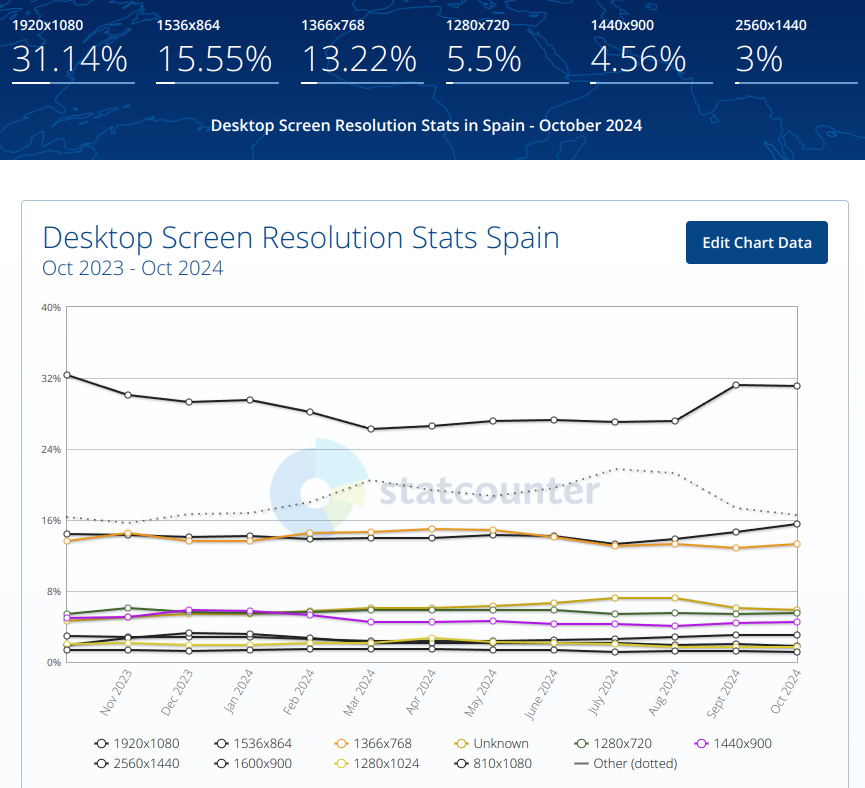

3.6 Maquetación en Bootstrap¶
Objetivos¶
Maquetar la disposición básica de una interfaz de usuario biblioteca de componentes Bootstrap. Esta biblioteca permite, de forma sencilla, crear una interfaz que se adapte a cualquier pantalla gracias a un diseño flexible.
Diseño adaptable o responsivo¶

El diseño adaptable es una filosofía de diseño y desarrollo cuyo objetivo es adaptar la apariencia de la interfaz de usuario al dispositivo que se esté utilizando para visitarlas.
Existen multitud de dispositivos como tabletas, teléfonos inteligentes, libros electrónicos, portátiles, PC, etc. Además, aun dentro de cada tipo, cada dispositivo tiene sus características concretas: tamaño de pantalla, resolución, potencia de CPU, sistema operativo o capacidad de memoria entre otras. Esta tecnología pretende que con un único diseño, todo se vea correctamente en cualquier dispositivo.
StatCounter
En la web StatCounter se pueden consultar estadísticas de uso de resoluciones de pantalla de distintos tipos de dispositivos y paises.
La imagen se muestra la evolución de las resoluciones de pantalla de escritorio en España el último año hasta octubre de 2024.

Para información actualizada visitar la web oficial:
https://gs.statcounter.com/screen-resolution-stats/desktop/spain
En el ejemplo se puede ver que el 31,14% utiliza la resolución 1920x1080, por lo tanto es buena idea diseñar la interfaz para que se vea correctamente en esta resolución. Sin embargo, hay que tener en cuenta el resto de resoluciones, por lo que es necesario que la interfaz se adapte a cualquier resolución.
Puntos de ruptura (Breakpoints)¶
Los puntos de ruptura (breakpoints) son los tamaños de pantalla en los que se cambia el diseño de la interfaz. En Bootstrap se utilizan los siguientes puntos de ruptura:
| Breakpoint | class infix | Tamaño de pantalla |
|---|---|---|
| Extra small | None | <576px |
| Small | sm |
≥576px |
| Medium | md |
≥768px |
| Large | lg |
≥992px |
| Extra large | xl |
≥1200px |
| Extra extra large | xxl |
≥1400px |
Por ejemplo, teniendo en cuenta que Bootstrap utiliza un sistema de rejilla de 12 columnas, si queremos que un elemento ocupe la mitad de la pantalla en pantallas de tamaño medio, un tercio en pantallas grandes, pero que ocupe toda la pantalla en pantallas de tamaño pequeño, utilizaremos las clases col-md-6 col-lg-4 col-sm-12.
Disposición de la interfaz de usuario¶
Para conseguir una interfaz adaptativa, utilizaremos un diseño de rejilla flexible, que se adapta a diferentes tamaños de pantalla.
Bootstrap utiliza un sistema de rejilla que permite crear diseños flexibles y adaptables a diferentes tamaños de pantalla. Para ello, se divide la cada elemento en 12 columnas.
Además, gracias a los puntos de ruptura, podemos definir diferentes tamaños de pantalla y asignar a cada elemento un número de columnas diferente para cada tamaño.
Elementos de maquetación¶
Bootstrap nos proporciona una serie de elementos de maquetación que nos permiten crear una interfaz de usuario adaptativa.
Contenedores¶
Los contenedores son los elementos que se utilizan para crear el diseño de rejilla. Existen dos tipos de contenedores:
.container: Crea un contenedor con un ancho fijo y centrado en la pantalla. El ancho del contenedor se ajusta automáticamente en función del punto de ruptura..container-fluid: Ocupa todo el ancho de la pantalla.
Filas (row)¶
Las filas se utilizan para agrupar elementos en una misma línea. Para crear una fila, utilizaremos el elemento .row.
Columnas (col)¶
Las columnas se utilizan para definir el número de columnas que ocupa un elemento. Para crear una columna, utilizaremos el elemento .col.
Ejemplo:
<div class="container">
<div class="row">
<div class="col">col</div>
<div class="col">col</div>
<div class="col">col</div>
</div>
</div>
Ejemplo de disposición de columnas
Ancho de columnas¶
A .col podemos asignarle el número de columnas que queremos que ocupe en función del tamaño de la pantalla.
Por ejemplo, si utilizaremos las clases .col-2 y .col-7 que en total ocupan 9 columnas, quedan 3 libres que podemos asignar a una última columna sin especificar su tamaño, que ocupará el espacio restante.
<div class="container">
<div class="row">
<div class="col-2">col</div>
<div class="col-7">col</div>
<div class="col">col</div>
</div>
</div>
Además, podemos asignar un número de columnas diferente para cada tamaño de pantalla. Para ello, utilizaremos la clase .col-{tamaño}-{número de columnas}.
Siguiendo con el ejemplo anterior, para que se adapte a pantallas de tamaño medio. Para ello, utilizaremos la clase .col-md-#. Cuando se supere el punto de ruptura mínimo md (≥768px), los elementos se apilarán.
<div class="container">
<div class="row">
<div class="col-md-2">col</div>
<div class="col-md-7">col</div>
<div class="col">col</div>
</div>
</div>
Renderizado utilizando para pantallas de ancho medio md (≥768px):
Ejemplo de rendereado al superar el punto de ruptura mínimo md (<768px):
Los puntos de ruptura se pueden combinar para definir diferentes tamaños de pantalla. Por ejemplo, si queremos que un elemento ocupe la mitad de la pantalla en pantallas de tamaño medio, un tercio en pantallas grandes, pero que ocupe toda la pantalla en pantallas de tamaño pequeño, utilizaremos las clases col-sm-12 col-md-6 col-lg-4.
Ejemplo responsivo de disposición de columnas
Ejemplo básico de maquetación de una interfaz mediante filas y columnas
Modelo de cajas¶
El modelo de cajas CSS se aplica a cajas que presentan comportamiento en bloque. El modelo define cómo funcionan juntas las diferentes partes de una caja (margen, borde, relleno y contenido) para crear una caja. Para complicarlo un poco más, hay un modelo de cajas estándar y un modelo de cajas alternativo.
Partes de una caja¶
Al hacer una caja de tipo bloque en CSS tenemos los elementos siguientes:
- El contenido de la caja: El área donde se muestra el contenido, cuyo tamaño puede cambiarse utilizando propiedades como
widthyheight. - El relleno de la caja (padding): El relleno es espacio en blanco alrededor del contenido; es posible controlar su tamaño usando la propiedad
padding. - El borde de la caja (border): El borde de la caja envuelve el contenido y el de relleno. Es posible controlar su tamaño y estilo utilizando la propiedad
border. - El margen de la caja ( margin): El margen es la capa más externa. Envuelve el contenido, el relleno y el borde como espacio en blanco entre la caja y otros elementos. Es posible controlar su tamaño usando la propiedad
margin.

En el modelo de cajas estándar, (box-sizing: content-box;) que utilizan por defecto todos los navegadores, el ancho y alto de la caja se calculan incluyendo el tamaño del relleno y el borde. Lo que supone algunos problemas a la hora de diseñar una interfaz de usuario.
Bootstrap utiliza el modelo de cajas alternativo (box-sizing: border-box), donde el ancho y alto de la caja se calculan incluye los tamaños del borde y el relleno.
Margen y relleno en Bootstrap¶
Para añadir margen y relleno a los elementos, se utilizan las clases .m-{tamaño} y .p-{tamaño} respectivamente, donde {tamaño} puede ser:
0: Sin margen o relleno (0px).1: 0.25rem (4px)2: 0.5rem (8px)3: 1rem (16px) valor por defecto.4: 1.5rem (24px)5: 3rem (48px)auto: Margen o relleno automático.x: Margen o relleno horizontal.y: Margen o relleno vertical.t: (top) Margen o relleno superior.b: (bottom) Margen o relleno inferior.s: (start) Margen o relleno al inicio. Izquierda en lenguajes de escritura de izquierda a derecha LTR (left-to-right) y derecha en lenguajes de escritura de derecha a izquierda RTL (right-to-left)e: (end) Margen o relleno derecho. Derecha en lenguajes de escritura de izquierda a derecha LTR (left-to-right) e izquierda en lenguajes de escritura de derecha a izquierda RTL (right-to-left)
Bordes en Bootstrap¶
Para añadir bordes a los elementos, se utilizan las clases .border, .border-{tamaño} y .border-{lado}-{tamaño} respectivamente, donde {tamaño} puede ser:
Y {lado} puede ser:
También podemos aplicar colores con las siguientes clases:
Además, podemos aplicar efectos de borde con las siguientes clases:
También podemos aplicar opacidad con las siguiente clases:
Visibilidad (display)¶
La propiedad display se utiliza para cambiar el comportamiento de visualización de un elemento. Por defecto, los elementos se muestran como elementos en bloque. Sin embargo, existen otros valores que permiten cambiar el comportamiento de visualización de los elementos.
En Bootstrap se utilizan las clases .d-{valor} y .d-{valor}-{tamaño} respectivamente, donde {valor} puede ser:
none: El elemento no se muestra, ni ocupa espacio en la vista. No confundir convisibility: hidden;que oculta el elemento pero sigue ocupando espacio vacío en la vista.block: El elemento ocupa todo el espacio disponible, el siguiente elemento a se situará por debajo. Los<h1>a<h6>y<p>, entre otros, tienen este comportamiento.inline: El elemento ocupa el espacio que ocupe el contenido, el siguiente elemento se situa a continuación. Los elementos<span>son un buen ejemplo.inline-block: Se comporta como un elementoinline, pero permite cambiar el ancho y el alto.grid: El elemento se comporta como un contenedor de cuadrícula.flex: El elemento se comporta como un contenedor flexible. Ver apartado Modelo de cajas flexibles (Flexbox).
Por ejemplo, para ocultar un elemento en pantallas más pequeñas, pero que se muestre en tamaños medianos o superiores podemos establecer las siguientes clases .d-none .d-md-block. Por lo general, al ocultar el elemento, se activa una opción para acceder a los elementos en una vista separada, normalmente un menú desplegable. Muy utilizado en diseño responsive para dispositivos móviles.
Contenido principal . . . . . . . . . . . . . . . . . . . . . . . . . . . . . . . . . . . . . . . . . . . . . . . . . . . . . . . . . . . . . . . . . . . . . . . . . . . . . .
🔻 Menú
Contenido principal . . . . . . . . . . . . . . . . . . . . . . . . . . . . . . . . . . . . . . . . . . . . . . . . . . . . .
Modelo de cajas flexibles (Flexbox)¶
El diseño de Caja Flexible (o Flexbox), es un modelo de diseño CSS3. La disposición de flexbox permite que los elementos adaptables dentro de un contenedor se organicen automáticamente dependiendo del tamaño de la pantalla o del dispositivo.
Para designar un contenedor como un contenedor flexible, en Bootstrap se utiliza la clase .d-flex para aplicar la propiedad display: flex; y .d-inline-flex para aplicar la propiedad display: inline-flex;.
Ejemplo de contenedor flexible con tres elementos:
Item 1
Item 2
Item 3
Ejemplo de contenedor flexible en línea con tres elementos:
Item 1
Item 2
Item 3
Podemos aplicar puntos de ruptura a los contenedores flexibles para que se adapten a diferentes tamaños de pantalla. Para ello, utilizaremos las clases .flex-{tamaño} y .inline-flex-{tamaño} respectivamente. Tal como hemos visto en el apartado Puntos de ruptura (Breakpoints).
Dirección de los elementos¶
Por defecto, los elementos se colocan en una fila, de izquierda a derecha. Para cambiar la dirección de los elementos, utilizaremos la clase .flex-{dirección} donde {dirección} puede ser:
row: (por defecto) Los elementos se colocan en una fila, de izquierda a derecha.row-reverse: Los elementos se colocan en una fila, de derecha a izquierda.column: Los elementos se colocan en una columna, de arriba a abajo.column-reverse: Los elementos se colocan en una columna, de abajo a arriba.
Ejemplo de contenedor flexible con tres elementos en una fila y en una fila inversa:
<div class="d-flex flex-row">
<p class="bg-info">Item 1</p>
<p>Item 2</p>
<p>Item 3</p>
</div>
<div class="d-flex flex-row-reverse">
<p class="bg-info">Item 1</p>
<p>Item 2</p>
<p>Item 3</p>
</div>
Item 1
Item 2
Item 3
Item 1
Item 2
Item 3
Ejemplo de contenedor flexible con tres elementos en una columna y en una columna inversa:
<div class="d-flex flex-column">
<p class="bg-info">Item 1</p>
<p>Item 2</p>
<p>Item 3</p>
</div>
<div class="d-flex flex-column-reverse">
<p class="bg-info">Item 1</p>
<p>Item 2</p>
<p>Item 3</p>
</div>
Item 1
Item 2
Item 3
Item 1
Item 2
Item 3
También podemos cambiar la dirección de los elementos en función del tamaño de la pantalla. Para ello, utilizaremos las clases .flex-{tamaño}-{dirección}. Tal como hemos visto en el apartado Puntos de ruptura (Breakpoints).
Justificar la posición de los elementos¶
Para justificar la alineación de los elementos, utilizaremos la clase .justify-content-{alineación}.
Ejemplo de contenedor flexible con tres elementos justificados a la izquierda, a la derecha, centrados, distribuidos y distribuidos equitativamente:
justify-content-start:
Item 1
Item 2
Item 3
justify-content-end:
Item 1
Item 2
Item 3
justify-content-center:
Item 1
Item 2
Item 3
justify-content-between:
Item 1
Item 2
Item 3
justify-content-around:
Item 1
Item 2
Item 3
justify-content-evenly:
Item 1
Item 2
Item 3
Podemos cambiar la justificación de los elementos en función del tamaño de la pantalla. Para ello, utilizaremos las clases .justify-content-{tamaño}-{alineación}. Tal como hemos visto en el apartado Puntos de ruptura (Breakpoints).
Alineación de elementos¶
Para alinear los elementos, utilizaremos la clase .align-items-{alineación}.
Ejemplo de contenedor flexible con tres elementos alineados arriba, abajo, centrados, estirados y en la línea base de la tipografía (se ha cambiado el tamaño del texto de los elementos para que se pueda apreciar mejor la alineación):
- Arriba
align-items-start:
Item 1
Item 2
Item 3
- Abajo
align-items-end:
Item 1
Item 2
Item 3
- Centro
align-items-center:
Item 1
Item 2
Item 3
- Estirado
align-items-stretch:
Item 1
Item 2
Item 3
- Línea base del texto
align-items-baseline:
Item 1
Item 2
Item 3
Podemos cambiar la alineación de los elementos en función del tamaño de la pantalla. Para ello, utilizaremos las clases .align-items-{tamaño}-{alineación}. Tal como hemos visto en el apartado Puntos de ruptura (Breakpoints).
Alineamiento individual de elementos¶
Para alinear individualmente los elementos, utilizaremos la clase .align-self-{alineación}.
Ejemplo de contenedor flexible con tres elementos alineados arriba, abajo, centrados, estirados y en la línea base de la tipografía:
- Arriba
align-self-start:
Item 1
Item 2 (align-self-start)
Item 3
- Abajo
align-self-end:
Item 1
Item 2 (align-self-end)
Item 3
- Centro
align-self-center:
Item 1
Item 2 (align-self-center)
Item 3
- Estirado
align-self-stretch:
Item 1
Item 2 (align-self-stretch)
Item 3
- Línea base del texto
align-self-baseline(en el ejemplo, los elementos 1 y 4 se encuentran estirados e ignoran la alineación a la línea base del texto):
Item 1
Item 2 (align-self-baseline)
Item 3 (align-self-baseline)
Item 4
Podemos cambiar la alineación de los elementos en función del tamaño de la pantalla. Para ello, utilizaremos las clases .align-self-{tamaño}-{alineación}. Tal como hemos visto en el apartado Puntos de ruptura (Breakpoints).
Relleno¶
La clase .flex-fill en una serie de elementos hermanos, fuerza a tener tamaños iguales a su contenido mientras ocupa todo el espacio disponible de forma equitativa.
Ejemplo de contenedor flexible con tres elementos con la clase .flex-fill, se puede observar que los elementos en los que se ha definido la clase (1 y 3) ocupan todo el espacio disponible de forma equitativa y el elemento 2 solo ocupa el espacio que necesita:
<div class="d-flex">
<p class="flex-fill">Item 1 (con mayor contenido)</p>
<p>Item 2</p>
<p class="flex-fill">Item 3</p>
</div>
Item 1 (con mayor contenido)
Item 2
Item 3
Crecimiento y encogimiento (grow and shrink)¶
La clase .flex-grow-{número} en una serie de elementos hermanos, fuerza a que los elementos crezcan en función del número que se le asigne. Por defecto, todos los elementos tienen un valor de 0, por lo que no crecen. Si se asigna un valor de 1, todos los elementos crecerán por igual. Si se asigna un valor de 2, los elementos crecerán el doble que los elementos con valor 1.
Ejemplo de crecimiento de un elemento con la clase .flex-grow-1:
Item 1 (flex-grow-1)
Item 2
Item 3
La clase .flex-shrink-{número} en una serie de elementos hermanos, fuerza a que los elementos se encojan en función del número que se le asigne. Por defecto, todos los elementos tienen un valor de 1, por lo que se encogen por igual. Si se asigna un valor de 2, los elementos se encogerán el doble que los elementos con valor 1.
Ejemplo de encogimiento de un elemento con la clase .flex-shrink-1. Para forzar el encogimiento de un elemento, se establece un ancho del 100% (w-100) al elemento 2, se puede observar como el contenido del elemento 1 hace fuerza un salto de línea:
<div class="d-flex">
<p class="flex-shrink-1">Item 1 (flex-shrink-1)</p>
<p class="w-100">Item 2</p>
</div>
Item 1 (flex-shrink-1)
Item 2
Envoltura (wrap)¶
La clase .flex-wrap en un contenedor flexible, fuerza a que los elementos se envuelvan en función del tamaño del contenedor.
Ejemplo sin aplicar envoltura de elementos:
Item 1
Item 2
Item 3
Item 4
Item 5
Item 6
Item 7
Item 8
Item 9
Item 10
Ejemplo aplicando envoltura de elementos con la clase .flex-wrap:
Item 1
Item 2
Item 3
Item 4
Item 5
Item 6
Item 7
Item 8
Item 9
Item 10
Orden de los elementos¶
La clase .order-{número} en un elemento flexible, fuerza a que el elemento se ordene en función del número que se le asigne. Por defecto, todos los elementos tienen un valor de 0, por lo que se ordenan en el orden en el que se encuentran en el código HTML. Si se asigna un valor de 1, el elemento se ordenará en primer lugar. Si se asigna un valor de 2, el elemento se ordenará en segundo lugar, y así sucesivamente.
<div class="d-flex">
<div class="order-3">Item 1 (order-3)</div>
<div class="order-1">Item 2 (order-1)</div>
<div class="order-2">Item 3 (order-2)</div>
</div>
Ejemplo básico de maquetación de una interfaz mediante flexbox
Agregar Bootstrap a un proyecto Electron¶
Para agregar Bootstrap a un proyecto Electron, podemos importar el módulo mediante el gestor de paquetes npm. Para ello, abrimos una terminal en la carpeta raíz del proyecto y ejecutamos el siguiente comando:
Una vez instalado, podemos importar Bootstrap en el archivo HTML principal del proyecto. Por ejemplo, en el archivo index.html:
Se debe tener en cuenta la ruta donde tengamos el archivo html y la carpeta node_modules en la que se instala Bootstrap. En el ejemplo, se ha supuesto que el archivo index.html se encuentra en la raíz del proyecto y la carpeta node_modules también, por lo que utiliza la ruta relativa ./node_modules/bootstrap/dist/css/bootstrap.min.css.
Bootstrap Icons¶
Otro paquete interesante es Bootstrap Icons, que proporciona una colección de iconos SVG personalizables. Para instalarlo, ejecutamos el siguiente comando en la terminal:
Lo deberemos incluir en el archivo HTML principal del proyecto, por ejemplo, en el archivo index.html de la misma forma que hemos hecho con Bootstrap.
Para más información sobre Bootstrap Icons, puedes consultar la documentación oficial.